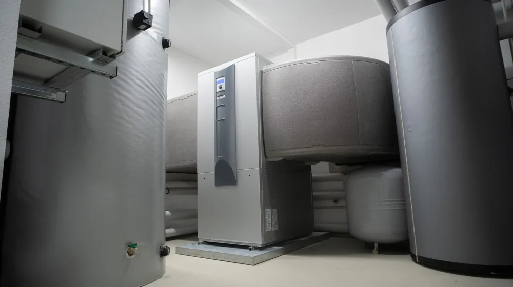

겨울철 난방비 30% 줄이는 7가지 비결: 지금 바로 시작해야 할 체크리스트
사진: alpha innotec / Pexels (무료 이미지, 출처 표기)
난방비 폭탄, 2026년 겨울은 피하고 싶다면?

매년 겨울, 치솟는 난방비 고지서에 한숨부터 나오시나요? 따뜻한 집에서 보내고 싶지만, 난방비 걱정 때문에 망설이는 분들이 많습니다. 하지만 조금만 신경 쓰면 겨울철 난방비를 효과적으로 줄일 수 있는 방법들이 있습니다. 2026년 8월 기준으로 겨울철 난방비를 아낄 수 있는 실질적인 팁들을 체크리스트 형태로 정리했습니다. 지금부터 함께 살펴보고 따뜻하고 경제적인 겨울을 준비해 보세요.
난방비 절약의 시작, 우리 집 단열 상태 점검
난방비 절약의 첫걸음은 바로 '단열'입니다. 아무리 난방을 해도 따뜻한 공기가 외부로 새어나가면 소용이 없습니다. 가장 먼저 문과 창문 틈새를 점검하는 것이 중요합니다. 문풍지나 창문 틈새 막이를 사용해 외부의 찬 공기 유입을 차단하고, 실내 온기가 빠져나가지 않도록 합니다. 흔히 베란다 창문이나 현관문 틈새가 취약합니다.
창문에 에어캡(뽁뽁이)이나 단열 시트를 부착하는 것도 효과적입니다. 창문 표면의 온도를 높여 실내 온기가 유지되도록 돕고, 외부 냉기 유입을 한 번 더 막아줍니다. 비교적 저렴한 비용으로 큰 단열 효과를 볼 수 있어 겨울철 필수 단열 아이템으로 꼽힙니다. 외풍이 심한 창문에는 두꺼운 암막 커튼이나 블라인드를 설치하는 것도 좋습니다.
보일러 효율 높이는 똑똑한 사용법
난방의 핵심인 보일러를 효율적으로 사용하는 것만으로도 난방비를 크게 줄일 수 있습니다. 실내 적정 온도는 18~20도로 유지하고, 너무 높게 설정하지 않는 것이 좋습니다. 장시간 외출할 때는 '외출 모드'를 활용하거나 난방 온도를 평소보다 2~3도 낮게 설정하여 보일러가 다시 실내 온도를 올리는 데 드는 에너지를 절약합니다.
보일러 온수 온도를 적정 수준으로 조절하는 것도 중요합니다. 보통 50~60도로 설정되어 있지만, 사용 목적에 따라 40~45도 정도로 낮춰도 충분한 경우가 많습니다. 또한, 보일러 배관 내부에 쌓인 이물질은 난방 효율을 떨어뜨리므로 2~3년 주기로 전문 업체에 의뢰하여 배관 청소를 진행하는 것을 고려해볼 수 있습니다. 2026년 8월 기준으로 보일러 제조사 공식 서비스센터나 전문 설비 업체에 문의하면 관련 정보를 얻을 수 있습니다.
생활 습관 개선으로 난방비 추가 절약
따뜻한 옷차림은 난방비를 절약하는 가장 기본적인 방법입니다. 내복이나 수면 양말, 가디건 등을 착용하면 체감 온도를 2~3도 올리는 효과가 있어 난방 온도를 낮춰도 춥지 않게 지낼 수 있습니다. 또한, 실내 습도를 40~60%로 유지하면 공기 순환이 원활해지고 체감 온도가 높아져 더욱 따뜻하게 느껴집니다. 가습기를 사용하거나 젖은 빨래를 널어두는 것도 좋은 방법입니다.
러그나 카펫을 바닥에 깔면 차가운 바닥에서 올라오는 냉기를 막아주고 실내 온기를 보존하는 데 도움이 됩니다. 난방을 하지 않을 때는 두꺼운 커튼을 쳐서 창문으로 들어오는 냉기를 막고, 햇볕이 강한 낮에는 커튼을 열어 햇살을 이용해 자연 난방 효과를 얻을 수 있습니다. 보조 난방기구(전기히터 등)는 보조적으로만 사용하고, 장시간 사용하지 않도록 주의해야 합니다.
난방비 지원 제도 활용하기: 놓치지 말아야 할 정보
정부와 지자체에서는 저소득층 및 취약계층의 겨울철 난방비 부담을 덜어주기 위한 다양한 지원 제도를 운영하고 있습니다. 대표적으로 에너지바우처가 있습니다. 에너지바우처는 냉난방에 필요한 에너지 비용을 지원하는 제도로, 매년 신청 기간과 지원 대상이 달라지므로 관련 부처(산업통상자원부, 지자체 등)의 2026년 하반기 공지를 반드시 확인해야 합니다.
이 외에도 도시가스 요금 감면, 지역난방 요금 할인 등 다양한 지원 프로그램이 존재합니다. 본인이 해당되는 지원 제도가 있는지 미리 파악하고 신청 기간 내에 빠짐없이 신청하는 것이 중요합니다. 정확한 사항은 거주지 관할 행정복지센터나 한국에너지공단 홈페이지 등 공식 홈페이지에서 다시 확인하시길 권장합니다.
에너지 효율 높이는 보온용품 활용법
난방 효율을 높여주는 다양한 보온용품을 적극적으로 활용하는 것도 좋은 방법입니다. 다음과 같은 제품들을 고려해볼 수 있습니다.
- 수면 잠옷/담요: 개인 보온력을 높여 실내 난방 온도를 낮출 수 있습니다.
- 온수 매트/전기요: 직접적으로 몸을 따뜻하게 해주어 보일러 전체 난방을 줄이는 데 효과적입니다.
- 단열 커튼/외풍 차단 문풍지: 창문과 문틈으로 새는 열을 막아 실내 온기 유지를 돕습니다.
- 내복/히트텍: 옷 안에 한 겹 더 입는 것만으로 체온을 크게 높여줍니다.
이러한 보온용품들은 구매 시 에너지 효율 등급이나 소비 전력 등을 꼼꼼히 확인하여 장기적으로 난방비 절감에 도움이 되는 제품을 선택하는 것이 현명합니다.
난방비 절약 실천 체크리스트
지금까지 살펴본 난방비 절약 팁들을 한눈에 볼 수 있도록 체크리스트로 정리했습니다. 겨울이 오기 전 미리 점검하고 실천하여 따뜻하고 경제적인 겨울을 보내시길 바랍니다.
위 체크리스트를 활용하여 우리 집 난방 환경을 개선하고, 불필요한 난방비 지출을 줄여보세요. 작은 습관의 변화가 이번 겨울 난방비 폭탄을 피하는 데 큰 도움이 될 것입니다.
🔗 이 글도 함께 보면 좋아요: 전통주 초보 탈출? 이 용어만 알면 전문가 됩니다 (핵심 7가지)
관련 추천 상품
문풍지, 단열시트, 수면잠옷, 온수매트 관련 인기 상품 보러가기
이 포스팅은 쿠팡 파트너스 활동의 일환으로, 이에 따른 일정액의 수수료를 제공받습니다.